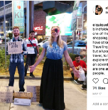
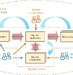
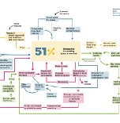

What I Learned From Quitting Coffee After 15 Years Of Daily Consumption
Angelo Belardi in
Better Humans
Apr 12, 2018
You might actually be immortal according to quantum mechanics.
Jeremie Harris in Noteworthy - The Journal Blog
Jun 17, 2018
MIT Scientists prove adults
learn language to fluency nearly as well as children
Scott Chacon is CEO of the online language learning company Chatterbug.
Scott Chacon
May 3, 2018
To Be Well-Informed, Cut the
News and Read These 7 Blogs Instead
More information isn’t the solution, thinking clearly is
Nick Wignall in Better Marketing
Aug 7
What Is the Walrus
Operator
in Python?
Learn how to condense your code with the new operator released in version 3.8
Jonathan Hsu in Better Programming
Nov 10
BUSINESS Popular topic
Sex, Beer, and Coding: Inside Facebook’s Wild
Early Days in Palo Alto
When the young Mark Zuckerberg moved to Palo Alto in 2004, he and his buddies built a corporate
proto-culture that continues to influence…
WIRED
Jul 30, 2018
EDUCATION Popular topic
College is Dying, Design Your Own
Education.
College is dying.
Johnny in HackerNoon.com
Sep 4, 2018
POPULAR ON MEDIUM
Apple Is Trying to Kill Web Technology
The company has made it extremely difficult to use web-based technology on its platforms, and it
hopes
developers won’t bother
Owen Williams in OneZero
Nov 7
BASED ON YOUR READING HISTORY
An Introduction to Structural Typography
Type as both language and composition
Bethany Heck in About Face
Oct 9, 2018
EDITORS‘ PICK
Losing a Pet Is as Painful as Losing a
Human
I didn’t just lose a tiny, seven-pound chihuahua. I lost a family member.
Ashley Laderer in Elemental
Dec 17
WORLD Popular topic
The first city in the world that is switching to
Bitcoin
You’ll never guess the world’s most expensive city.
Melis
Aug 9, 2018
EDUCATION Popular topic
The Accidental PhD Student
Or, why NOT to go to grad school?
Thomas P Seager, PhD in Age of Awareness
Oct 9, 2018
WORLD Popular topic
The Reductive Seduction Of Other People’s
Problems
“If you’re young, privileged, and interested in creating a life of meaning, of course you’d be
attracted
to solving problems that seem…
Courtney Martin in BRIGHT Magazine
Jan 11, 2016
EDUCATION Popular topic
How I landed a full stack developer job without a
tech degree or work experience
Six months ago, I got my first developer job as full stack web developer for a startup. I had no
relevant work experience, no tech degree…
Charlie Jeppsson in freeCodeCamp.org
Mar 31, 2018
BASED ON YOUR READING HISTORY
Figma Design Handbook (P.t 1)
How to Start your Journey as a Designer with Figma
David Ukauwa in Figma-Africa
Jun 23, 2018
POPULAR ON MEDIUM
The Unforgettable Relationship Advice My
Ex-Girlfriend Gave Me
“That’s the one thing you never do”, she said
Nico Ryan in P.S. I Love You
Nov 6
WORLD Popular topic
It’s probably time to learn Chinese
For over a century, learning English has been one of the highest ROI things a non-English speaker
could
do. English went from being a…
Eric Meltzer
Oct 8, 2017
EDUCATION Popular topic
Why We’re Doing School All Wrong
And what I wish schools would do about it
Steven Hopper in Age of Awareness
Mar 9
WORLD Popular topic
Has The Iron Fish’s Luck Run Out?
The cast iron fish was meant to reverse anemia in Cambodia, but it might be tackling the wrong
problem.
BRIGHT Magazine in BRIGHT Magazine
Aug 30, 2018

WORLD Popular topic
Begpackers seen by a third-worldist
For me, the real issues are different and much broader
Majda Saidi
Aug 16, 2018

BUSINESS Popular topic
Everything a Data Scientist Should Know About Data
Management*
(*But Was Afraid to Ask)
Phoebe Wong in Towards Data Science
Aug 28
 EDUCATION Popular topic
EDUCATION Popular topic
The Student I Couldn’t Save
Confessions of a high school guidance counselor
Tommy Paley in Human Parts
Nov 5
WORLD Popular topic
Bruce Lee, King of Sewers
Romanian foster children were thrown in the street, so they built an underground empire
Radu Ciorniciuc in Journalist’s House
Nov 10, 2018
EDUCATION Popular topic
The definitive Node.js handbook
Note: you can get a PDF, ePub, or Mobi version of this handbook for easier reference, or for reading
on
your Kindle or tablet.
Flavio Copes in freeCodeCamp.org
Sep 6, 2018

BUSINESS Popular topic
A New Methodology For Business Model
Mapping
Systems thinking, spinning your flywheel, and using visual language to tell compelling stories
Andrew James Walls in The Startup
Jan 9
BUSINESS Popular topic
Tricks for Dealing With Toxic
Colleagues
Listening to incessant complaining can hurt your happiness and your job performance
Rebecca Fishbein in Office Politics
Feb 5
EDUCATION Popular topic
Mothballs: Why you don't actually need
it
Who knew using mothballs could be so deadly?
Ayu Larasati in Treeusable 2018
Jul 10, 2018
BUSINESS Popular topic
Confessions of a U.S. Postal Worker: “We deliver
Amazon packages until we drop dead.”
How the Post Office’s deal with Amazon has made life hell for mail carriers
Brendan O'Connor in GEN
Oct 31, 2018
BASED ON YOUR READING HISTORY
What Bikini Atoll Looks Like Today
Sixty years after the nuclear tests, the groundwater is contaminated and the coconuts are
radioactive.
But are the coral reefs thriving?
Stanford Magazine in Stanford Magazine
Nov 20, 2017
EDUCATION Popular topic
The Complete Guide to Effective Reading
Learning how to learn: how to make
your ROI on reading explode Maarten van Doorn Apr 27